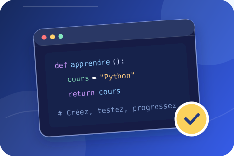

TON COIN POUR APPRENDRE
Bonjour, Alex 👋
Ton espace pour étudier tranquillement, reprendre un cours et voir le chemin parcouru.
▦ mardi 3 novembre ♡ À ton rythme
♡ À ton rythme
♡ À ton rythmeON CONTINUE ?
On reprend Introduction à Python ?
Ton cours t'attend là où tu l'avais laissé.
Tu en es ici65 %
Continuer ma leçon ↗
TON PARCOURS
Tes repères
Des petites avancées qui finissent par compter.
Cours suivis4Dans ta bibliothèque
Cours terminés1Leçons et progression
Quiz réalisés7Évaluations effectuées
Moyenne aux quiz82 %Sur les quiz soumis
POUR CONTINUER
Voir les cours →Les cours qui t’attendent
Reprends quand tu veux, sans perdre le fil.